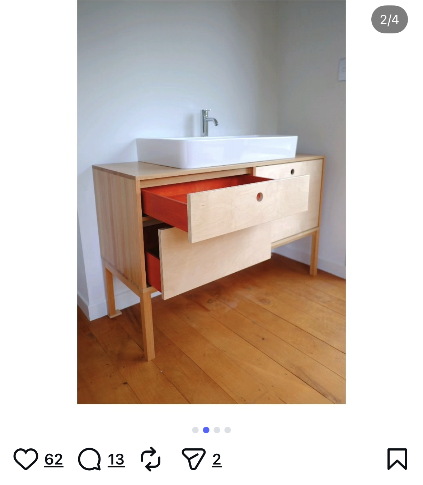
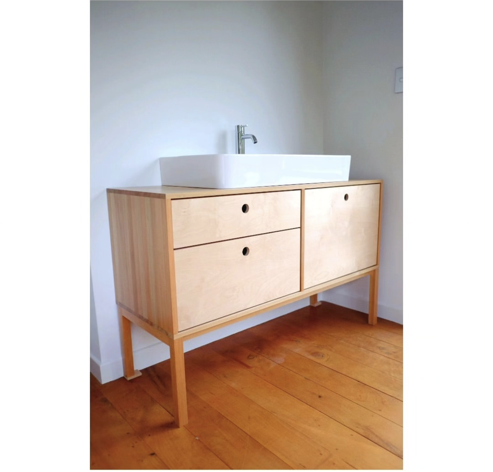

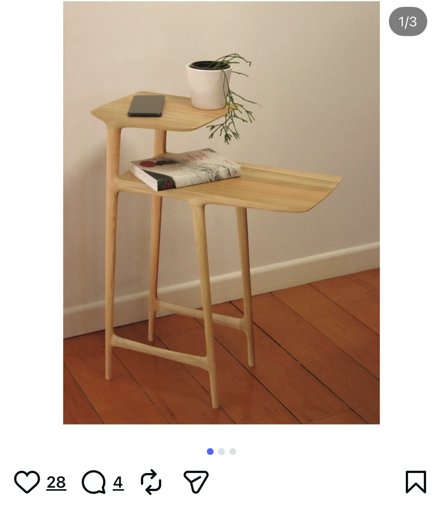
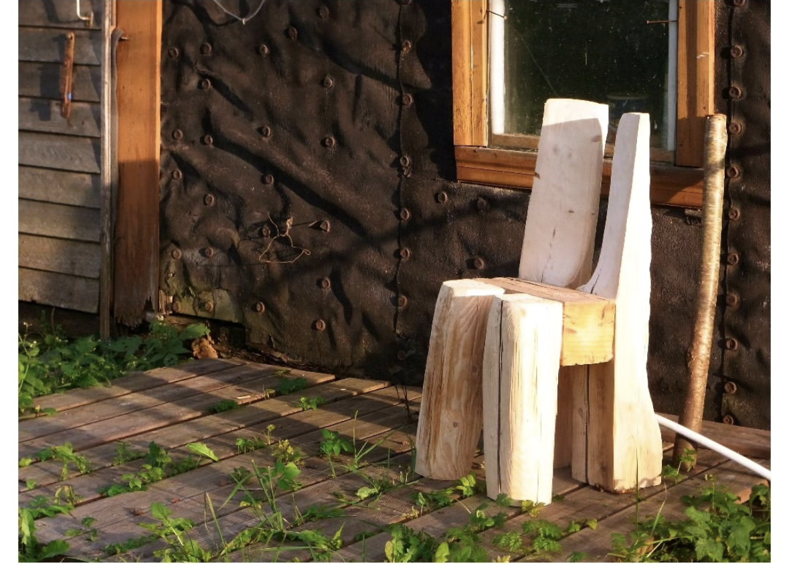
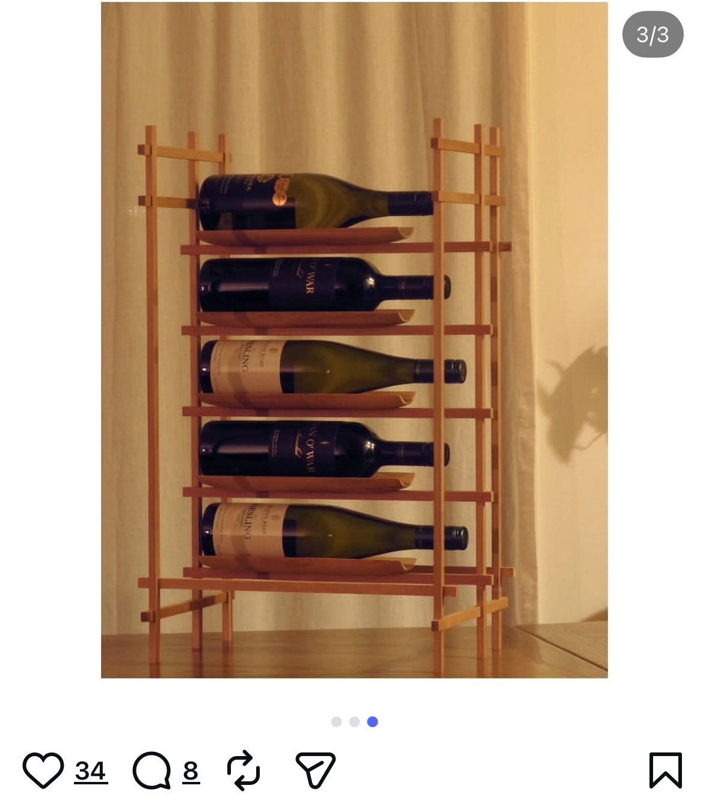
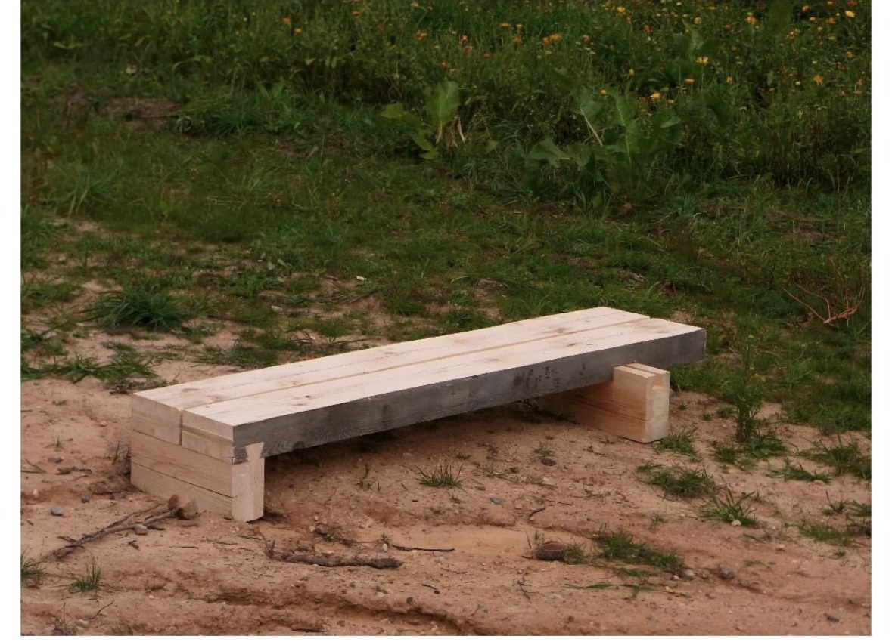
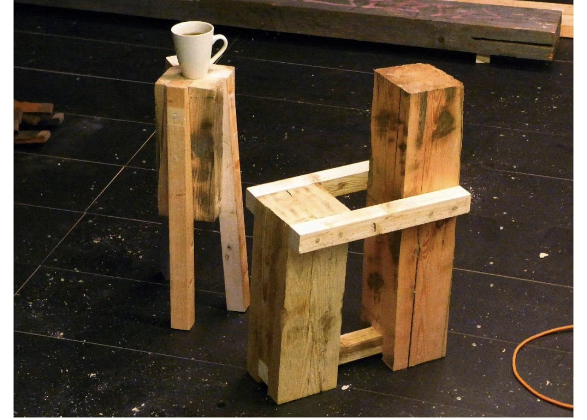
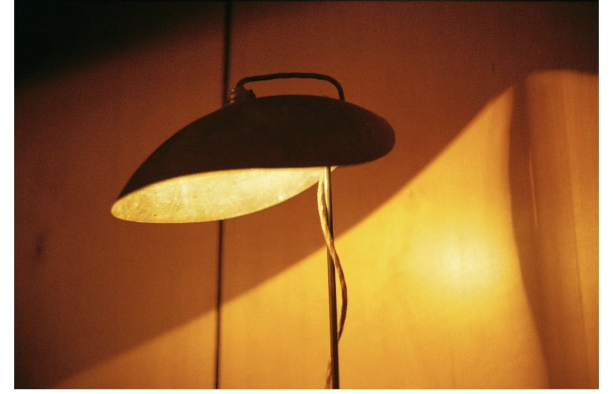
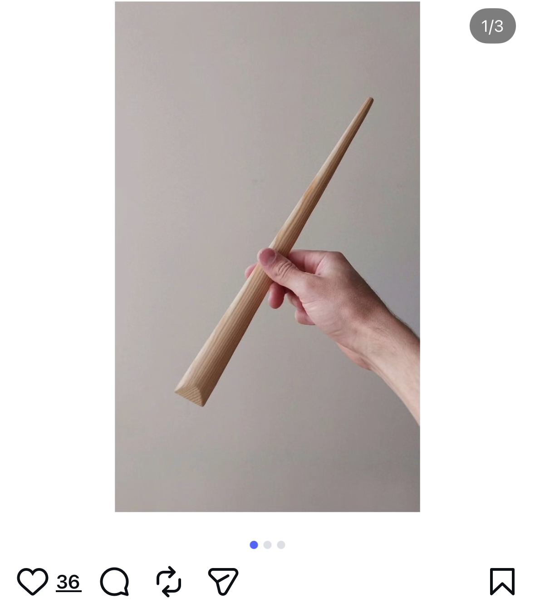
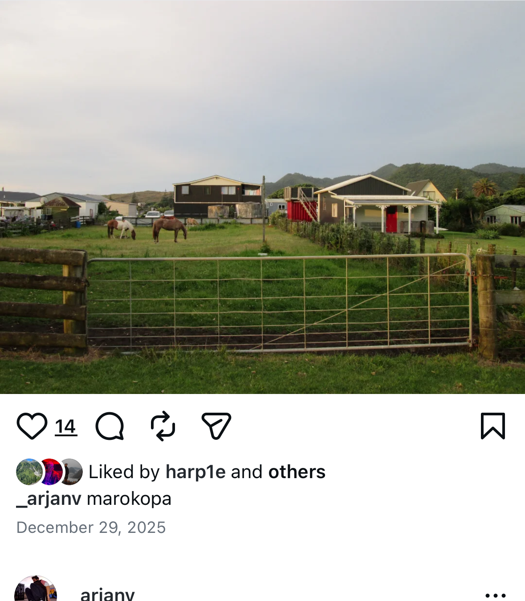
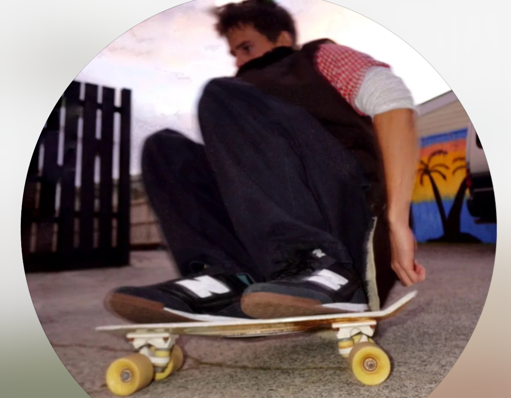
Arjan is an artist and joiner originally from Auckland, now based in Raglan, New Zealand.
Every piece begins with listening. Understanding the space, the light, how you live.
Timber is chosen by hand — for figure, colour, and grain. Often sourced locally, reclaimed, or found.
Built in the workshop, by hand. Traditional joinery techniques, no shortcuts.
A piece made to outlast trends. To age well. To find its final resting place.
Based in Raglan, available for commissions throughout New Zealand.
Enquire about joinery, furniture, objects, or collaborations.